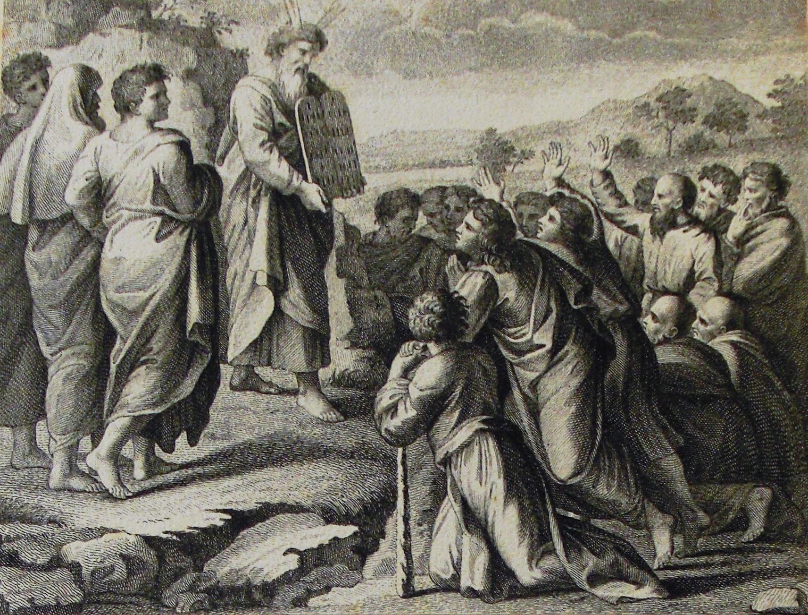
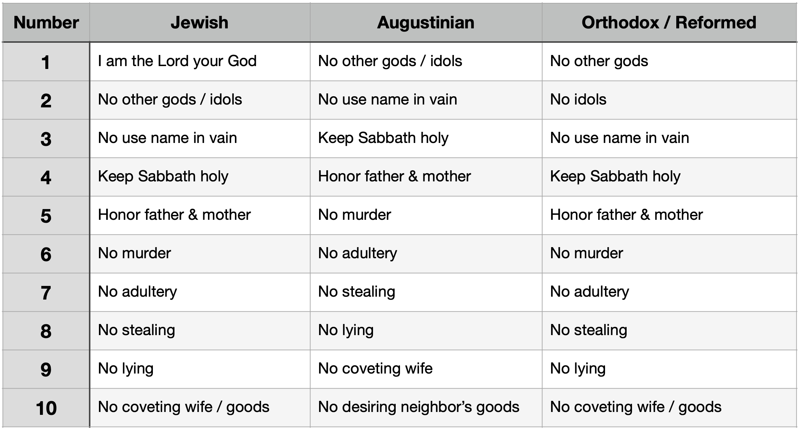

Which Ten Commandments?
5837 words long.
Published on 2024-04-28

Abstract
The material in this article first appeared as the chapter "Which Ten Commandments?" in the book Plague, Precept, Prophet, Peace. It defines the Law Pattern. This pattern shows that the Ten Commandments are structured according to the Trinity and reveals that the Word of God is both divine and human, eternal and living in time. The article also shows how the Law Pattern connects thematically to the Harvest Pattern of Jesus and the Growth Pattern of Solomon.
In its original context, this article followed chapters that matched features of the commandments and the ten plagues on Egypt to cycles of judgment against nations besides Egypt, like Persia, Greece and Rome. Those chapters proved the enduring power of the commandments and God's determination to exercise judgment against the world in a logical, progressive fashion, culminating with the return of Christ.
God's Decalogue is not toothless.
Which Ten Commandments?
We could leave it there with commandment and judgment, but my books have an awkward habit of upending my ideas as I write their conclusions. Everything in this essay depends upon the Ten Commandments appearing in the order I said with ideas grouped the way I grouped them. As it turns out, Jews, Catholics & Lutherans, and the Orthodox & Reformed traditions parse the commandments three different ways. All have ten and all the commandments are still there, but the dividing lines between where one stops and the next starts vary. The prophetic structure proposed in these chapters only matches one of them (the Orthodox & Reformed), though it can be reinterpreted to allow the Jewish division without doing great injury to the theory.
Let’s roll up our sleeves and see what can be made of this wrinkle. Note that the version adopted by the Catholic Church and inherited by the Lutherans derives from the work of Saint Augustine. The chart on the next page derives from an article by James Akin. (See Akin's article here: “The Division of the Ten Commandments” )
The Augustinian approach combines the prohibition against worshiping other gods with the prohibition against idols. The argument is that people of that day who worshiped other gods always worshiped idols, too, so there is no need to separate them. Today we have philosophical polytheists who eschew idols, but then there were no such people. Augustine then split coveting in two. One defense of this is that coveting goods parallels stealing, while coveting someone’s wife parallels adultery. This is logical, but breaks the prophetic pattern. By moving “thou shalt not kill” into fifth position, it no longer matches the plague of boils and the Black Plague. Other correspondences are also broken.

The Jewish approach, in addition to combining the first two commandments like Augustine, includes words from the preamble as a different first commandment, “I am the Lord your God.” Thus they begin with a positive command, not a negative. With these two changes, commandments three through ten of the Jewish scheme match the Orthodox & Reformed scheme.
This Jewish approach has things to recommend it. Joshua’s final charge to the people applies just as well to this first commandment as to the other:
And if it is evil in your eyes to serve the Lord,
choose this day whom you will serve,
whether the gods your fathers served in the region
beyond the River, or the gods of the Amorites
in whose land you dwell.
But as for me and my house, we will serve the Lord.”
- Joshua 24:15
Both ideas, of negatively not worshiping foreign gods or of positively worshiping the Lord are present. Likewise, Peter’s bold declaration to the crowd also fits both:
“This Jesus is the stone that was rejected by you,
the builders, which has become the cornerstone.
And there is salvation in no one else, for there is
no other name under heaven given among men
by which we must be saved.”
- Acts 4:11-12
What is decisive for me in retaining the Protestant view is the comparison to the plagues on Egypt. The staff turning to a snake at the first meeting where Moses asks Pharaoh to let his people go matches the preamble to the Ten Commandments well. That meeting preceded all the plagues. It was a positive request. Then every plague was a plague against an idol worshiped by the Egyptians. This correspondence does not fit well if the first commandment is positive.
Rightly Dividing the Commandments
Why tackle this issue here instead of earlier, where the need to order and pair commandments and plagues was first introduced? It is because of something else that Akin said. Look closely at the commandments. There are not ten or even twelve imperative statements. There are fourteen.
As fourteen statements, they reveal additional structures and patterns not noticeable when framed as ten items. We shall look at two:
- The Trinity
- Solomon’s Fourteen Seasons
The breakdown into fourteen imperative statements is:
- You shall have no other gods before me.
- You shall not make for yourself a graven image...
- You shall not bow down to them or serve them...
- You shall not take the name of the LORD your God in vain...
- Remember the Sabbath day, to keep it holy.
- Six days you shall labor...
- In it [the seventh day] you shall not do any work...
- Honor your father and your mother...
- You shall not kill.
- You shall not commit adultery.
- You shall not steal.
- You shall not bear false witness against your neighbor.
- You shall not covet your neighbor's house…
- You shall not covet your neighbor's wife...
Triune Arrangement of the Decalogue
The fourteen imperative statements of the Decalogue may be broken into four triune groupings under the umbrella of one God. The first statement, “You shall have no other gods before me”, proclaims the uniqueness and unity of the godhead. With preeminence in view, the best association to a member of the Trinity is to the Father.
As in my other writings, I find that the clearest expression of the Father at work is through physical changes to reality, miracles of power, and in the work of pruning and redirecting our priorities. The Father works with His hands and He decides the timing and arrangement of all activities performed by the godhead. The Son speaks. His work is expressed through the mind, ideas and speech. The Holy Spirit acts upon the heart’s emotions and desires. Its concern is holiness and worship. With these gross distinctions, it is possible to assign the remaining statements to the appropriate person of the Trinity.
Statements 2-4 constitute the first Trinity. Making a graven image is a creative work of the hands, hence that offends the Father as creator. Bowing down before that image is an act of worship, so offends the Holy Spirit. Taking the name of the Lord in vain concerns speech and ideas, so offends the Son.
Statements 5-7 constitute the second Trinity. Remembering the Sabbath day to keep it holy concerns worship and holiness, hence pleases the Holy Spirit. Working for six days pleases the Father, who labors with His hands in the material world. Resting on the seventh day and not oppressing others with work while you rest, like servants and family members, pleases the Son, “For the Son of Man is lord of the Sabbath.” (Matthew 12:8) It is the Son who said, “Come to me, all who labor and are heavy laden, and I will give you rest.” (Matthew 11:28)
Statements 8-10 constitute the third Trinity. Honoring father and mother is the proper attitude of a good child, hence pleases the Son, who always honors his parents. This also identifies God as a father, and since all women are mortal humans, hints at the incarnation. Murder offends the Father, as it is a work of the hands. Finally, adultery is a matter of the heart. The prophets call idolatry and false worship spiritual adultery, so this is an affront against the Holy Spirit.
Statements 11-14 constitute the fourth Trinity. We steal with our hands, so this offends the Father. Lying to or about our neighbor is verbal, so it offends the Word of God, the Son. To bring the commandments to a close, the final two imperative statements are about coveting. They are about our heart’s attitude, the domain of the Holy Spirit.
- Father.
- Father, Spirit, Son.
- Spirit, Father, Son.
- Son, Father, Spirit.
- Father, Son, Spirit.
- Spirit.
The order of persons in these four cycles is anything but random. The Father twice comes first and never comes third, demonstrating His supremacy. All three persons come first at least once, demonstrating their egalitarianism. There are only three positive imperatives, the fifth, sixth and eighth, yet each person is associated with one. The Holy Spirit has two imperative statements together in one Trinity, and they come last, another position of honor.
What are we to make of this? Why is it important? This tells us that the Ten Commandments flow from God’s triune identity. They are not arbitrary. To see these ten words, these fourteen imperative statements, is to see a part of God. No one who sees God, however small a part that may be, remains unchanged. Change means time and time is marked out in seasons. Let’s ponder those seasons.
Solomon’s Fourteen Seasons
Ecclesiastes 3 lists twenty-eight times paired into fourteen seasons of two times each. Do these fourteen imperative statements found in the commandments match the fourteen seasons? Sort of. Enough of the commandments match to suggest a correlation. A helpful metaphor is to say that the commandments are seeds that grow into the qualities pertaining to each season.
Each series – commandments and seasons – describes a process that progresses to a goal. Some say that the commandments are arranged from most to least important. It would be more helpful to say that they proceed from gross to fine, with the removal of covetousness from our souls the final step of purification. Likewise, with Solomon’s times, the final seasons call for one to put into practice all that you learned earlier, to wage war, claim victory and celebrate peace. Each moves towards a different vision of perfection, either moral purity or loyal obedience.
The plagues are all distortions or inversions of elements essential for the harvest. The farmer desires a pure river and mild precipitation other than hail. Insects in balance are essential, locusts not so much. Draught animals, fields of grain and sun – not darkness – are in order. And children are both workers in the harvest and fruit of a different harvest. If the plagues are an anti-harvest, then the commandments in their negative form must be anti-growth. Perhaps the commandments are seeds which grow into the seven qualities of the Growth Pattern? Let’s give that a try. The following comparisons line the seven phases of the Growth Pattern up against the fourteen imperative statements.
Security. The times to be born & to die go with “No other Gods”, while plant & pluck up go with the making of idols. How do these commandments foster a sense of security? These lines from Leviticus express this commandment in a warm and fuzzy way:
And I will walk among you and will be your God,
and you shall be my people.
I am the Lord your God, who brought you out of
the land of Egypt, that you should not be their slaves.
And I have broken the bars of your yoke
and made you walk erect.
- Leviticus 26:12-13
Security comes from a strong sense of individual and family identity. Once I trusted that I had a new identity in Christ, my fear of death vanished. Being born again helped me die to self. Making an idol is trusting that you can save yourself by the work of your own hands. When I realized that I didn’t need to accomplish anything to be accepted into heaven, it was liberating. The call to not build idols is the call to accept the grace of God.
As for family identity, it comes from being uprooted from the world and planted in the church. It was a fellow Christian, Paul Anderson, who pointed me to the Scripture verses that helped me progress in this understanding of my new identity. Thank you, Paul.
Ability. The times to kill & heal go with the commands to not bow down to and serve idols, while the times to break down & build up go with not taking the name of the Lord in vain. The making of idols had to do with the heart. These commands are about the hands (physical act of worship) and mind (vain words). This phase of growth is about our parents training us how to use our hands and minds. It is about learning good habits and breaking bad ones. Good words here form the speech of simple faith, which differs from the speech of the mature in “a time to speak”.
Stability. The times to weep, laugh, mourn & dance are attached to the first two parts of the Sabbath commandment, the directives to keep the sabbath and work for six days. Remember the old proverb “an idle mind is the devil’s workshop”? Work not only puts food on the table, it plays a role in keeping us sane – if we do not succumb to workaholism. Yet we must not avoid the matters that trouble our soul. The sabbath is a time when we can pour out our heart to God in prayer. Sabbath observance is the bedrock of a sane and stable life.
Amity. The times to cast away & gather stones go with the command to not work on the sabbath or make your family or servants work either. Then the times to embrace & refrain from embracing go with the command to honor your father and your mother. It is with these pairings that the genius of how the commandments are phrased shines. The third part of the sabbath command is relational. We are not to enslave others. “A time to gather stones” is about cooperation in the tasks of life in a marriage or friendship. We are to be fair employers who allow our employees to rest. We are also to not be overbearing in family matters. In marriage, we are to treat our spouse with respect and share the burdens of life equitably, not “scatter stones” in disagreement. And honoring parents is more than grudging acquiescence to their requests. It is embracing them, their dreams and their ways, if they be in line with God’s.
Opportunity. The times to seek & lose (or give up) go with the command against murder. The times to keep & cast away go with the command against adultery. The pairings in this section are harder to understand. Surely murder robs its victim of all future opportunities, and if caught, the perpetrator as well. Giving up is the opposite of the attitude behind murder; it is giving up your anger, pride and rights. We can say that this is about making good choices. Proverbs may shine light on this:
Do not enter the path of the wicked,
and do not walk in the way of the evil.
Avoid it; do not go on it;
turn away from it and pass on.
For they cannot sleep unless they have done wrong;
they are robbed of sleep
unless they have made someone stumble.
For they eat the bread of wickedness
and drink the wine of violence.
- Proverbs 4:14-17
As for adultery, it is a cause of divorce, “a time to throw away” one’s spouse. One should aim at conduct that yields “a time to keep”.
It is a fact that financial woes, which are crises of missed or squandered opportunity or mismanaged resources, are another major cause of divorce. This helps explain the pairing of the life phase of opportunity to the commandment against divorce. A study on the causes of divorce came to these conclusions:
- An annual income of over $50,000 can decrease the risk of divorce by as much as 30% versus those with an income of under $25k.
- Feeling that one’s spouse spent money foolishly increased the likelihood of divorce 45 percent for both men and women.
- Couples that argue about finances at least once a week are 30 percent more likely to get divorced.
- The same study also found that couples with no assets at the beginning of a three-year period are 70 percent more likely to divorce by the end of that period than couples with $10,000 in assets.
(See the article DIVORCE STATISTICS: OVER 115 STUDIES, FACTS AND RATES FOR 2022 )
Community. The times to tear & sew (or mend) go with the prohibition against stealing. The times to keep silence & speak go with the command to not bear false witness. The Lord’s Prayer is our guide here. If tearing is theft or trespass, it ruptures relationships. Forgiveness and restitution are what can mend such tears. This also goes for lying. However, the proper issue from the seed of this law is to speak the truth, especially the gospel. This is when the good news of God’s forgiveness and the gospel of peace join the two commandments together. We steal, but God freely gives.
Loyalty. The times to love & hate go with the coveting of our neighbor’s houses and possessions. The times for war & peace go with the coveting of his wife. This comes down to the most important choice we make. Do we want what this world offers or what heaven offers? Materialism and sexual immorality are seductive. Strangely, the coveting of the neighbor’s wife is not paired with “a time to love”. This says that it is about loving possessions like they were people and treating people like they were things.
There is a prophetic reason for pairing the coveting of another man’s wife with “a time for war”. The final battle will be over the affection of the Bride of Christ, namely the Church. Satan wants to capture her fancy, not for love, but for power and to destroy her. Jesus will return to fight for his beloved. The wedding will go off without a hitch. (Or is it “with a hitch”?)
Trinity and Time. If we project the person of the Trinity that matches each imperative statement onto the seven phases of life, a beautiful symmetry arises. Let us consider that the first imperative also goes with the Father, for the Father is over all. Only thrice does a person of the Trinity appear twice in succession.
- The Father has statements 1 & 2. The beginning.
- The Son has statements 7 & 8. The exact middle.
- The Holy Spirit has statements 13 & 14. The end.
These correspond to the times of Security, Amity & Loyalty.
- In “a time to be born”, parents joyfully hold their new baby in the role of creator.
- In “a time to embrace” a new marriage is formed and husband and wife hold each other. In Ruth, it is the “kinsman-redeemer” who redeemed and rescued his bride from poverty and insecurity. Most wonderful is this fact. The Decalogue is split into two parts: commands to love God and commands to love your neighbor (other humans). The seventh imperative is part of a “Love God” command, part of the Sabbath command. The eighth imperative, Honor your Father and Mother, is a “Love your neighbor” command. This reveals the twofold nature of Christ: man and God! There it is, right in the Law, staring us in the face.
- In “a time to love”, mature love and loyalty sustain an unbreakable bond, a couple holding hands and facing the world together.
Creator. Redeemer. Sustainer. That is the character of God shining through the lens of His commandments and His master plan for time. In Peace, the chapters of Job are shown to be a generational clock. This helps make sense of the count of fourteen statements in another way. The first fourteen generations carry us from the creation to King Solomon. The next fourteen generations run from Solomon to Jesus and the capture of the Roman Empire. The final fourteen generations take us from Rome to the true Eternal City. This threefold division of history corresponds to the times when each person of the Trinity was most prominent in their work in the order Father, Son, Holy Spirit.
Because of the pre-flood generations being longer (for Adam and Methuselah), the previous division is unbalanced. Another way is to look at the many prophetic clocks in Peace that end in 2280 AD. If you divide the 6,300 years from the creation to 2280 AD in three equal pieces, you get these periods:
- 4020 BC to 1920 BC: Father
- 1920 BC to 180 AD: Son
- 180 AD to 2280 AD: Holy Spirit
The first period saw the greatest physical miracles: the creation, flood, scattering of the peoples at Babel, and judgment of Sodom and Gomorrah. These events all happened during the time of the Father. The climax of this age was the coming of Abraham, the father of many nations. Soon after lived Job, who was both a father mourning the death of his children and a suffering servant given insight into the nature of the savior. Job lived at the transition from one age to the next. Job heard straight from the Father the announcement of what was to come, the age of the Son.
This was followed by the second period, the time when the Word was written, finished and (mostly) agreed upon. The Father performed the miracles of the Exodus, but they served to authorize the giving of the Law. The Law was the main event, and that Law is Christ. The prophets spoke and the Son of God was born, crucified and rose again. These events all happened during the time of the Son. The final event was the baptism of the Holy Spirit coming upon the church, announcing the next age.
The third time is the era in which we live, the era of the Holy Spirit. The Father’s miracles are mostly hidden. No more words are being added to the Bible and Christ’s sacrifice is complete. Slaves were not set free by divine fiat or miraculous sign, but because millions of Christians, moved by the Spirit, gave their treasure and lives to break those chains. These are the miracles of transformed hearts working in unison.
If there is a fourth time to follow 2280 AD, it will be a time for all three persons of the Trinity to act together. The Father will perform the great miracles of the final judgment and the new creation. The Son will return at the head of an army of angels to rapture the church. And the Spirit? Revelation is filled with references to the work of the Spirit. It will be awesome.
Let’s back up to the era of the Son. The end date of 180 AD seems odd, as it falls eighty or more years after Revelation was written, the final piece of the Bible puzzle. This raises the question of how early the church came to general agreement over the New Testament canon. For a long time, the earliest known canon list was composed by Athanasius ca 367 AD. However, Michael Kruger argues that Origen provided us with a complete list of 27 books ca 250 AD.
(See Kruger, Michael J. What is the Earliest Complete List of the Canon of the New Testament? )
Since Origen was not writing in a polemic or defensive vein, he was stating something that was not controversial in his day. That is evidence that the New Testament canon was decided even earlier. Thus a date of 180 AD for the establishment of the canon is not unreasonable.
Why mention this? There is a riddle to be solved. The Law of Moses gives time durations for many regulations. The longest duration is the Jubilee cycle.
You shall count seven weeks of years, seven times seven years,
so that the time of the seven weeks of years shall give you
forty-nine years. Then you shall sound the loud trumpet
on the tenth day of the seventh month. On the Day of Atonement
you shall sound the trumpet throughout all your land.
And you shall consecrate the fiftieth year, and
proclaim liberty throughout the land to all its inhabitants.
It shall be a jubilee for you, when each of you shall return
to his property and each of you shall return to his clan.
- Leviticus 25:8-10
Liberty! What leader ever decreed that all slaves be freed, all debts be canceled and all property be returned on a regular schedule? The Lord made sure to attach the most powerful feelings to this fifty-year cycle of justice and equity. He made sure that we would pay attention. Thus many Christians have tried to use the Jubilee cycle to understand Bible prophecy. The results are mixed.
If we take this half century as a unit of time, what happens if we combine it with numbers drawn from the Ten Commandments? We have already seen the number three, for the Trinity, in five ways: four cycles and a fifth that frames the whole. There are fourteen imperative statements, which gives us the factors of two (for Jesus’ dual nature as man and God) and seven, which is associated with the Holy Spirit. The ten plagues were also divisible by seven, using “calls” or “summons” as shown earlier (in the chapter "Exodus: Called & Summoned to Grow" in Plague, Precept, Prophet, Peace). Also, we matched the imperatives to the seven stages of the Growth Pattern. Revisiting two, we have the two tablets, for loving God and neighbor. Thus we have these numbers to play with:
2 x 3 x 7 = 42
Forty-two is how many steps it takes to rebuild a wall (in Nehemiah), escape a desert (in Numbers), get you from Abraham to Jesus in a genealogy (in Matthew), or complete the Word of God. In Hebrew, since they did not have numerals, each letter of the alphabet doubles as a number. Thus each word in Hebrew has a numeric value. The singular form of God is Eloah, spelled in Hebrew (right-to-left) as:
אלוה
The values of the letters are:
| Value | Letter |
|---|---|
| 1 | א |
| 30 | ל |
| 6 | ו |
| 5 | ה |
| 42 | אלוה |
Thus the number for Eloah is 42. What do you get if you multiply forty-two times a jubilee period?
2,100 years = 2 x 3 x 7 x 50 years
From this math exercise we see that each person (singular) of the Trinity has 2,100 years to complete his share of the work:
6,300 years = 3 persons x 2,100 years per person
If fewer years are granted to the last era, it is for mercy, to spare His children of the last days from the certain death of the final persecutions of the Tribulation. If God extends it, it is so that all three persons may equally provide succor to the church.
All of this, God’s overarching plan for history, lies encoded within His law. Each person of the Trinity was assigned a third of history to rule, and rule it they have. These Ten Commandments truly do set people free.
Note: The preceding found a mathematical basis for three symmetric periods of 2,100 years each and a spiritual meaning for each period. It built the periods using a unit equaling the length of a jubilee cycle. It gave the start and end years for each period. It did all this by analyzing the commandments of Exodus. This looks like it defines a prophetic clock, but where are the details? The real proof that we found something here would be to find a sequence of prophecies that correspond to each of the forty-two periods. There is such a sequence, but not in Exodus! See “Job’s Anti-jubilee Clock, Defined” and the two chapters that immediately follow it for details. The grid of prophecies uncovered there support the middle era, when the Word of God was defined.
The end of the matter
Every time I approach Ecclesiastes, it strikes me differently. This essay is about the Ten Commandments and the plagues on Egypt, so why should the meaning of Ecclesiastes be at issue? It is because I finally see that even without naming or counting them, Ecclesiastes is about the Ten Commandments.
The first four times I tackled Ecclesiastes, my reactions to its conclusion were rejection, confused acceptance, submission and transcendence. [32]
The end of the matter; all has been heard.
Fear God and keep his commandments,
for this is the whole duty of man.
For God will bring every deed into judgment,
with every secret thing, whether good or evil.
- Ecclesiastes 12:13-14
I struggled to grasp how book and conclusion fit. How did the arguments marshaled by Solomon prove anything about commandments and obedience? It appears my confusion was complete.
- I did not know God
- I did not understand the fear of the Lord
- I did not grasp the commandments
- I could not conceive of obedience as a fulfilling and meaningful purpose for life
- I could not see what keeping the commandments accomplishes
Overcoming so much ignorance and unbelief required decades of study and spiritual growth. To know God is to revere Him as a treasure. I needed to discover the heavenly treasures that Jesus spoke of in his Sermon on the Mount and understand how they are hidden in Christ. I needed to follow the process outlined in Proverbs that leads to an understanding of the fear of the Lord:
My son, if you receive my words
and treasure up my commandments with you,
making your ear attentive to wisdom
and inclining your heart to understanding;
yes, if you call out for insight
and raise your voice for understanding,
if you seek it like silver
and search for it as for hidden treasures,
then you will understand the fear of the Lord
and find the knowledge of God.
- Proverbs 2:1-5
Then you will understand righteousness and justice
and equity, every good path;
for wisdom will come into your heart,
and knowledge will be pleasant to your soul;
- Proverbs 2:9-10
Knowledge of God does not start out pleasant. Only after one has been trained in the House of Mourning does it become so. That required paying rapt attention to Job.
The Psalms, Proverbs and Prophets speak often about the benefits that flow from fearing God. They appear to assert them without proof, just as Solomon does in Ecclesiastes. How does fearing God constitute a purposeful life? Solomon describes the futility of life under the sun. Logic only works on things we can see, smell, taste, touch and hear. The heavenly realm exists beyond our senses. If logic and consequences flow from such unseen things, we cannot follow such arguments. We are doomed to a life of futility if we rely solely upon our senses.
Now I have spotted my error. There is an unseen heavenly realm and events and principles beyond my reckoning. But that heavenly realm is not the only realm hidden from sight. There is a realm underground. It is not “under the sun”. It is shielded from the sun in darkness and things happen there that we can discover if we take a spade in hand and start digging. It is the world of growing things.
And he said,
“The kingdom of God is as if a man should scatter
seed on the ground. He sleeps and rises night and day,
and the seed sprouts and grows; he knows not how.
The earth produces by itself, first the blade,
then the ear, then the full grain in the ear.
But when the grain is ripe, at once he puts
in the sickle, because the harvest has come.”
- Mark 4:26-29
The difference between growing things and heavenly things is that while both are mysterious, we have adequate faculties to probe the secrets of the former. The fear of the Lord and the Ten Commandments possess aspects of both growing things and heavenly mysteries. We cannot understand them completely, but we can understand them more deeply. Let’s see what our spade has dug up.
Ecclesiastes conforms to both the Harvest Pattern (demonstrated in Peace) and the Growth Pattern. We saw that the Ten Commandments may be split into fourteen imperative statements. Each statement corresponds to one of Solomon’s fourteen seasons (where a season is two times). They match, not because they are equal, but because one sprouts and grows into the other, as seed to mature plant. The commands are the seeds Jesus spoke of in his parable of the soils and the growth in maturity that they produce matches the proper phase of life from Ecclesiastes.
So command connects to season and the seasons measure growth. The commandments measure out God’s judgment upon the nations across history, while the times and seasons plot the growth of those civilizations. The seven pillars of Lady Wisdom’s house fit snugly into its foundation, the Law.
These connections can guide us toward wisdom and healing…
This discussion is continued in Matthew and the Law of Christ The patterns just excavated in this article are there shown to be more than theoretical. The peculiar Trinitarian interpretation of the Ten Commandments is faithfully realized in the structure of the Gospel of Matthew.
Links to the other articles in this section:
Spiritual Growth Introduction to the articles about spiritual growth.
What are Life's Twelve Most Important Questions? If you can answer these questions, you know the way better than the Mandelorian.
What are the Heavenly Treasures? It is one thing to list these treasures, quite another to acquire them!
The Harvest Pattern of Jesus A tactical pattern for overcoming an individual obstacle and reaping a single spiritual harvest.
The Growth Pattern of Solomon Overview of a strategic pattern to help you plan your whole life.
There is a Season The chapter from Peace, like Solomon Never Knew where I first introduced the Growth Pattern.
The Apostle Paul's Discipleship Program Shows how the first seven letters of Paul to the churches are arranged according to the Growth Pattern.
The Motherhood Pattern A strategic pattern for women.
The Law Pattern of Moses The law does more than restrict; it also guides.
- Which Ten Commandments? The Harvest and Growth Patterns fit perfectly into the Law Pattern.
- Matthew and the Law of Christ The Gospel of Matthew is a perfect realization of the Law Pattern. It helps us understand what the Apostle Paul meant by the phrase "the law of Christ".
The Journey Pattern It is a long journey back to Eden.
Emotional Prophecies of the Psalms
Job and the Ways to Talk to God
Job Description for a Savior Job knew what he needed in a savior. Do you?
Dreams Dreams can guide you, paralyze you, or lead you astray. In my case, it was all three.
Spiritual Warfare Somebody IS out to get you.